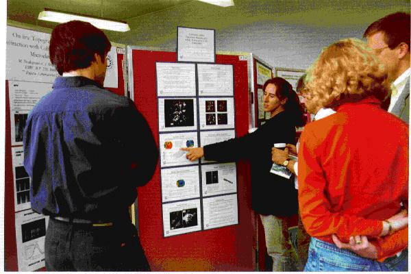
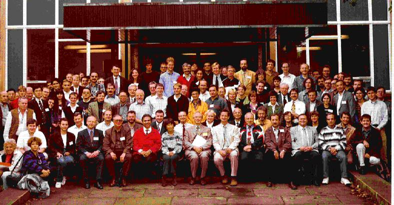

4th European Conference on High Resolution
X-ray Diffraction and Topography
The 4th biennial conference on High Resolution Diffraction and Topography was held at the University of Durham, U.K. from Wednesday 9th September to Friday 11th September 1998. Durham University is the third oldest English university and in keeping with this tradition, delegates were housed in the original college, University College. As the college buildings include the 11th Century castle overlooking Palace Green and the Cathedral, this World Heritage Site provided a spectacular backdrop for what was a stimulating and memorable conference.
Scientific sessions were held in the Physics Department of the University and the scale of the meeting was such that we were able to hold a small specialist commercial exhibition in the same room in which refreshments were served. The Poster Sessions were in adjacent rooms, with the lecture theatre nearby, which made for a compact and closely-knit atmosphere.
The format of the scientific sessions reverted to that of the first two meetings (Marseilles and Berlin) with primary emphasis on poster presentations, allowing ample time for informal discussion. We had 135 delegates, with 176 papers accepted by the Programme Committee. Sadly many of these papers were from colleagues in Russia and former Soviet Republics who were not able to travel due to the financial crisis which broke just before the meeting. 28 papers were selected for oral presentation, principally on grounds of programme coherence and balance. Following their success at an X-ray imaging workshop in Grenoble last year, we experimented by including three "Poster Highlights" sessions in which authors of poster papers were given two minutes in which to show the key results and convince other delegates that their paper was worth visiting. The self-discipline of the participants in these 90 minute sessions was outstanding and, unexpectedly, they proved easy to chair. While one delegate commented that 90 minutes reading abstracts could have been more profitable, my own view (which I believe is shared by the majority of participants) is that they were extremely informative and memorable. I certainly found the subsequent poster sessions much more interesting and effective.
Each X-TOP meeting has had its own emphasis. Perhaps unsurprisingly the Durham meeting featured phase contrast imaging strongly with a keynote paper by Peter Cloetens (ESRF) reviewing the dramatic developments stimulated by the extraordinary phase coherence which was found in the (long) ID19 X-ray topography beamline at the ESRF. A very significant number of the experiments on that beamline now involve some form of phase contrast imaging, expanding the range of problems studied to include biological, structural and composite materials. Jo Gastaldi (Marseille) showed how the combination of phase and diffraction imaging has thrown new light on the growth mechanisms of quasi-crystals, whose 5-fold symmetry remains of topical interest to crystallographers. Anatoly Snigirev (ESRF) showed how new developments in focusing optics opened up possibilities of new X-ray imaging techniques, which included microfluorescence imaging on the micrometre scale. His was one of several outstandingly elegant presentations in which the full power of data projection from a PC was exploited. Elegance of a different kind was evident in the opening invited paper by Richard Deslattes (NIST). His gentle sense of humour combined with a clear an lucid description of outstanding high resolution diffraction experiments forming part of the project to define Avogadro's number set both the tone and level of the meeting. Similarly impressive were Cev Noyan's (IBM) microdiffraction measurements of strains in the aluminium interconnects of silicon integrated circuit devices.

Dr Caroline Moore explains details of her work in one of the
Poster Sessions
Harmut Metzger (Munich) led the invited speakers on the last day, showing the power of grazing incidence diffraction techniques to probe the in-plane lattice parameter of quantum dot and wire structures. In a beautifully structured talk, he demonstrated how analysis techniques have developed using finite element modelling to determine the strains within these nanoscale features. In the only theoretical invited paper, Anatoly Andreev (Moscow) presented his theoretical model of grazing incidence scattering outside of the Born wave approximation. In a thoughtfully prepared talk, which emphasised physical understanding over mathematical detail, he showed how analysis of X-ray scattering from very rough surfaces was now in principle possible. Chris Lucas (Liverpool) described how surface diffraction experiments could be exploited for in-situ studies of surface reactions and Stefano Lagomarsino (Rome) completed the invited papers with a description of how sub-micron sources of coherent radiation can now be obtained using thin film waveguide structures. The invited speakers deserve special thanks for setting the level for both the contributed oral talks and the poster presentations.
We have reverted to the tradition set by the first two meetings of publishing the proceedings as a regular issue of the Journal of Physics D (Applied Physics). Just over 60 papers containing new and original work have been submitted and are now in the process of being refereed to the normal standards of the journal. Publication is scheduled for April 1999.

Delegates pose for a formal Conference Photograph, Brian Tanner, Conference Organiser is in the middle of the front row
An original aim of the XTOP conferences was to stimulate the use of X-ray diffraction topography at the new ID19 facility of the ESRF. Another was to bring together the diffraction imaging and high resolution diffraction communities, to enhance the science in both areas. The quality and range of the scientific contributions suggests that both aims have been achieved. It was pleasing to find that the sense of comradeship, spiced with genuine but friendly rivalry, has not been lost. The social atmosphere of the conference was excellent, helped to some extent by the competition, engineered by Peter Hatton, in which Bede Scientific, Bruker and Philips vied with each other to provide the most wine for dinner each night. A concert of English choral music, with a distinct North Country flavour was the cultural highlight. 10% of the delegates purchased CDs of the choir after the concert!
The success of the conference is largely due to the efforts put in by the local team. It was a delight to see my group working so well together with such spirit. Particular thanks are due to the conference secretary Nikki Bingham whose detailed preparative work and friendly welcome led not only to an extremely smooth and orderly meeting but one which participants will remember with pleasure for a very long time to come.
Brian Tanner
Conference Chairman
University of Durham